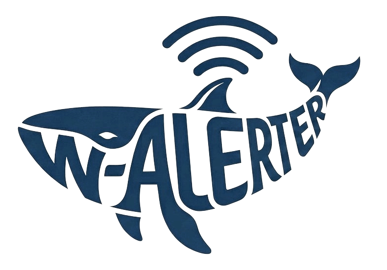
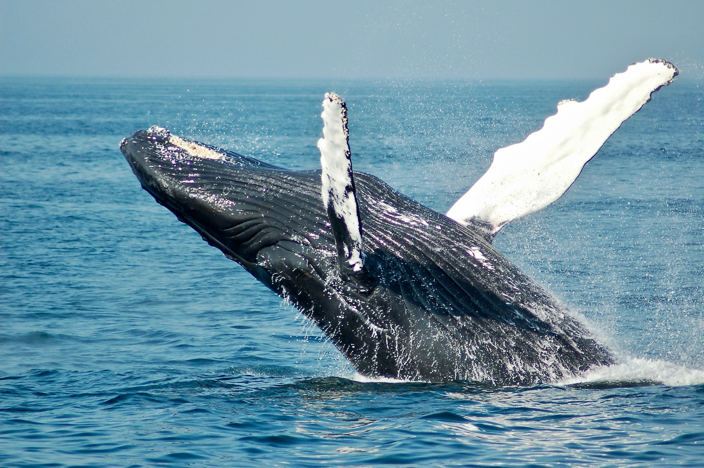

Aylık referanslar
KLOROFİL-a / mg/m³Arşiv referansları, gözlem ölçümlerinden ayrı tutulur.

W-ALERTER0
Balinaları gözeten rota analizi.
| Etap | Varış koordinatı | Klorofil-a | Mesafe | Değerlendirme |
|---|
Etap riski varış noktasına göre hesaplanır. Rota, eklediğiniz noktaları sırasıyla birleştirir.
Rotalarınızı JSON olarak yedekleyebilir, başka bir tarayıcıda yeniden içe aktarabilirsiniz.
Kaynak kodda NASA MODIS-Aqua olarak belirtilen dört aylık referans korunmuştur. Ham dosya, ürün kimliği, yıl aralığı ve kesin coğrafi kapsam henüz sağlanmamıştır.
Arşiv referansları, gözlem ölçümlerinden ayrı tutulur.
Gözlemin klorofil-a değeri, seçilen ayın referansına bölünür. Bu oran, mevcut W-ALERTER modelinin risk sınıfını belirler.
oran < 1.251.25 ≤ oran < 1.8oran ≥ 1.8Geçiş göstergesi, mevcut modelde oran × 50 olarak hesaplanır ve %99.8 ile sınırlanır. Oran 0.5’in altındaysa oran × 18 kullanılır. Bu gösterge doğrulanmış bir balina olasılığı değildir.
Geçiş noktaları arasındaki mesafe Haversine formülüyle, R = 3440 NM alınarak hesaplanır. Varış noktasının oranı 1.25 veya üzerindeyse etabın tamamı riskli mesafeye eklenir.
Eski model sabitleri: 10 knot, %28.5, 2.5 L/NM. Gemiye özgü yakıt veya CO₂ hesabı değildir.
Klorofil-a · Dört aylık klasik referans · mg/m³
Hesaplama yöntemi henüz bağlanmadı.
Sıralı geçiş noktaları, Haversine mesafesi ve mevcut klorofil eşikleri korunuyor.
Rota planlayıcıyı aç ↗16 yönlü A* uygulaması bu depoda bulunamadı. Motor bağlantısı hazır; yeni bir algoritma yazılmadı.
Yeni risk, yakıt veya CO₂ sonucu üretilmiyor.